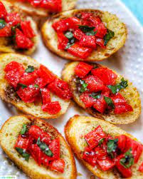

Prep: 15 mins
Cook: 5 mins
Total: 20 mins
Servings: 8
Ingredients
- 1 loaf french bread, cut into slices
- 1 tbsp. extra virgin olive oil
- 8 roma plum tomatoes, diced
- 1/3 cup chopped fresh basil
- 1 ounce parmesan cheese, freshly grated
- 2 cloves of garlic, minced
- 1 tbsp. good quality balsamic vinegar
- 2 teaspoons extra virgin olive oil
- 1/4 teaspoon kosher salt
- 1/4 teaspoon freshly ground black pepper
Steps
- Preheat oven to 400 degrees F (200 degrees C). Brush bread slices on both sides lightly with 1 tablespoon oil and place on large baking sheet. Toast bread until golden, 5 to 10 minutes, turning halfway through.
- Meanwhile, toss together tomatoes, basil, Parmesan cheese, and garlic in a bowl. Mix in balsamic vinegar, 2 teaspoons olive oil, kosher salt, and pepper.
- Spoon tomato mixture onto toasted bread slices and serve immediately.
Return to top
Return to main page